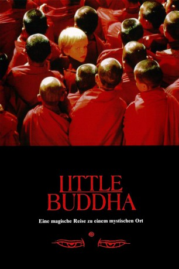

#2695 Little Buddha
 
 IMDB-Wertung: 6.0 / 10
IMDB-Wertung: 6.0 / 10  Metascore: 0
Metascore: 0 
Lama Norbu (Ruocheng Ying) kommt nach Seattle, um die Reinkarnation seines toten Lehrmeisters, Lama Dorje (Ven. Geshe Tsultim Gyelsen), zu suchen. Zunächst führt ihn seine Suche zum jungen Jesse Conrad (Alex Wiesendanger), einem jungen Buddhisten. Dessen Eltern (Chris Isaak, Bridget Fonda) glauben im Gegensatz zu ihrem Sohn nicht an Wiedergeburt. Der Vater erfährt, dass es angeblich zwei weitere Reinkarnationen des Lama Dorje gibt. Mönche erklären ihm, dass Jesse deswegen nach Butan reisen müsse. Zunächst reagieren die Eltern ablehnend, machen sich mit ihrem Sohn schließlich aber doch auf den Weg. In Nepal lernen sie die anderen beiden Kandidaten kennen: Raju (Raju Lal), ein heimatloses Kind, und Gita (Greishma Makar Singh), ein indisches Mädchen aus der Oberschicht.
Jahr: 1993
Dauer: 141 Minuten
FSK: 12
Land: Italien Studio: Arthaus FilmverleihTonspuren: DTS - ,
Untertitel:
Auflösung: 1080p (1920x960) Größe: 12185 MB
Genre: Drama
Regisseur:  Bernardo Bertolucci
Bernardo Bertolucci
Drehbuch: Bernardo Bertolucci, Rudy Wurlitzer, Mark Peploe
Soundtrack: Ryuichi Sakamoto
Darsteller:
 Keanu Reeves als Siddhartha
Keanu Reeves als Siddhartha Chris Isaak als Dean Conrad
Chris Isaak als Dean Conrad Bridget Fonda als Lisa Conrad
Bridget Fonda als Lisa Conrad- Jo Champa als Maria
- Anu Chettri als Temptation Girl
- Imtiaz Amir als Siddhartha's Friend , uncredited
- Kiran Rao als Passenger , uncredited
- Ruocheng Ying als Lama Norbu
- Alex Wiesendanger als Jesse Conrad
- Raju Lal als Raju
- Greishma Makar Singh als Gita
- Sogyal Rinpoche als Kenpo Tenzin
- Ven. Khyongla Rato Rinpoche als Abbot
- Ven. Geshe Tsultim Gyelsen als Lama Dorje
- Jigme Kunsang als Champa
- Thubtem Jampa als Punzo
- Surekha Sikri als Sonali
- T.K. Lama als Sangay
- Doma Tshomo als Ani-La
- Mantu Lal als Mantu
- Mountain Yogi als Mountain Yogi
- Rinzin Dakpa als Oracle
- Rudraprasad Sengupta als King Suddhodhana
- Kanika Pandey als Queen Maya
- Rajeshwari Sachdev als Yasodhara
- Santosh Bangera als Channa
- Vijay Kashyap als Vizir
- Bhisham Sahni als Asita
- Madhu Mathur als Prajapati
- Anupam Shyam als Lord Mara
- Ruchi Mathur als Queens Assistant
- Rashid Mastaan als Beggar
- S.S. Pandey als Old Musician
- Sadiya Siddiqui als Temptation Girl
- Tarana Ramakrishnan als Temptation Girl
- Antia Thakur als Temptation Girl
- Kavita Hahat als Temptation Girl
- Nagabab Shyam als Ascetic
- Mahana Amar als Ascetic
- Chitra Mandal als Ascetic
- Narmadapuree als Ascetic
- Kumar Lingeshewer als Ascetic
- Nirmala als Village Girl
- Ailsa Berk als Elephant Performer
Datei: X:\1993\Little Buddha (1993, FSK12, 1920x960).mkv seit 03.12.2015
Festplatte: HD 1992-1995
 Es gibt insgesamt 68 Filme in der Gruppe '1993'
Es gibt insgesamt 68 Filme in der Gruppe '1993'